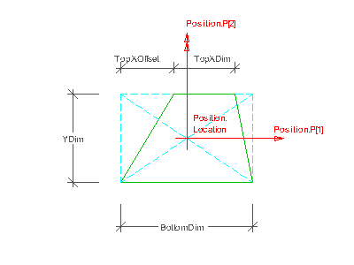

8.15.3.26 IfcTrapeziumProfileDef
8.15.3.26.1 Semantic definition
IfcTrapeziumProfileDef defines a trapezium as the profile definition used by the swept surface geometry or the swept area solid. It is given by its Top X and Bottom X extent and its Y extent as well as by the offset of the Top X extend, and placed within the 2D position coordinate system, established by the Position attribute. It is placed centric within the position coordinate system, that is, in the center of the bounding box.
Figure A illustrates parameters of the trapezium profile definition.

Position
The parameterized profile defines its own position coordinate system. The underlying coordinate system is defined by the swept surface or swept area solid that uses the profile definition. It is the xy plane of either:
- IfcSweptSurface.Position
- IfcSweptAreaSolid.Position
or in case of sectioned spines the xy plane of each list member of IfcSectionedSpine.CrossSectionPositions.
By using offsets of the position location, the parameterized profile can be positioned centric (using x,y offsets = 0.), or at any position relative to the profile. Explicit coordinate offsets are used to define cardinal points (e.g. upper-left bound).
Parameter
The IfcTrapeziumProfileDef is defined within the position coordinate system, where the BottomDim defines the length measure for the bottom line (half along the positive x-axis) and the YDim defines the length measure for the parallel distance of bottom and top line (half along the positive y-axis). The top line starts with a distance of TopXOffset from -BottomLine/2,YDim (which can be negative, zero, or positive) and has a length of TopXDim along the positive x-axis.
8.15.3.26.2 Entity inheritance
8.15.3.26.3 Attributes
| # | Attribute | Type | Description |
|---|---|---|---|
| IfcProfileDef (4) | |||
| 1 | ProfileType | IfcProfileTypeEnum |
Defines the type of geometry into which this profile definition shall be resolved, either a curve or a surface area. In case of curve the profile should be referenced by a swept surface, in case of area the profile should be referenced by a swept area solid. |
| 2 | ProfileName | OPTIONAL IfcLabel |
Human-readable name of the profile, for example according to a standard profile table. As noted above, machine-readable standardized profile designations should be provided in IfcExternalReference.ItemReference. |
| HasExternalReference | SET [0:?] OF IfcExternalReferenceRelationship FOR RelatedResourceObjects |
Reference to external information, e.g. library, classification, or document information, which is associated with the profile. |
|
| HasProperties | SET [0:?] OF IfcProfileProperties FOR ProfileDefinition |
Additional properties of the profile, for example mechanical properties. |
|
| IfcParameterizedProfileDef (1) | |||
| 3 | Position | OPTIONAL IfcAxis2Placement2D |
Position coordinate system of the parameterized profile definition. If unspecified, no translation and no rotation is applied. |
| Click to show 5 hidden inherited attributes Click to hide 5 inherited attributes | |||
| IfcTrapeziumProfileDef (4) | |||
| 4 | BottomXDim | IfcPositiveLengthMeasure |
The extent of the bottom line measured along the implicit x-axis. |
| 5 | TopXDim | IfcPositiveLengthMeasure |
The extent of the top line measured along the implicit x-axis. |
| 6 | YDim | IfcPositiveLengthMeasure |
The extent of the distance between the parallel bottom and top lines measured along the implicit y-axis. |
| 7 | TopXOffset | IfcLengthMeasure |
Offset from the beginning of the top line to the bottom line, measured along the implicit x-axis. |
8.15.3.26.4 Property sets
-
Pset_ProfileMechanical
- MassPerLength
- CrossSectionArea
- Perimeter
- MinimumPlateThickness
- MaximumPlateThickness
- CentreOfGravityInX
- CentreOfGravityInY
- ShearCentreZ
- ShearCentreY
- MomentOfInertiaY
- MomentOfInertiaZ
- MomentOfInertiaYZ
- TorsionalConstantX
- WarpingConstant
- ShearDeformationAreaZ
- ShearDeformationAreaY
- MaximumSectionModulusY
- MinimumSectionModulusY
- MaximumSectionModulusZ
- MinimumSectionModulusZ
- TorsionalSectionModulus
- ShearAreaZ
- ShearAreaY
- PlasticShapeFactorY
- PlasticShapeFactorZ
8.15.3.26.5 Concept usage
| Concept | Usage | Description | |
|---|---|---|---|
| IfcProfileDef (1) | |||
| Property Sets for Profiles | General |
This concept can be applied to the following resources: |
|
| Click to show 1 hidden inherited concepts Click to hide 1 inherited concepts | |||
8.15.3.26.6 Formal representation
ENTITY IfcTrapeziumProfileDef
SUBTYPE OF (IfcParameterizedProfileDef);
BottomXDim : IfcPositiveLengthMeasure;
TopXDim : IfcPositiveLengthMeasure;
YDim : IfcPositiveLengthMeasure;
TopXOffset : IfcLengthMeasure;
END_ENTITY;